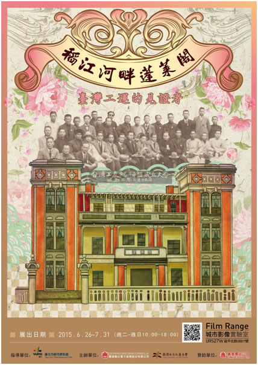

URS27W 城市影像實驗室- 【稻江河畔蓬萊閣】
由義美聯電及蔣渭水文化基金會共同策劃的【稻江河畔蓬萊閣】特展，由104年6月26日起在「URS27W 城市影像實驗室」展出！ 與「江山樓」同為大稻埕四大酒樓之一的「蓬萊閣」，在臺灣日治時期農工階級的發展中佔有重要的一席之地！讓我們與蓬萊閣一同見證臺灣早期社會運動的蓬勃盛況。 展出地點：臺北市大同區延平北路2段27號 (URS27W城市影像實驗室) 展場時間：104年6月26日至7月31日10:00∼18:00 (周一公休)
「稻江河畔蓬萊閣」宣傳短片
https://www.youtube.com/watch?v=jZU1ODaH48s
